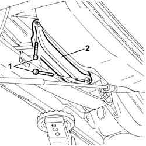
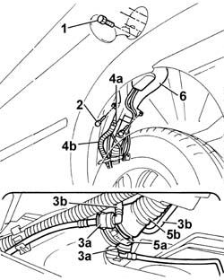

1040A30 fuel filler pipe - r + r
- Path
- Procedures > 10 ENGINE > 1040 FUEL TANK AND PIPES > 1040A FUEL TANK AND COMPONENTS > 1040A30 fuel filler pipe - r + r
- Kind
- repair procedure (removal / refitting; the operation number is the code)
- Applies to
- engines: 1.4 8v, 1.6 16v; all production periods
- Interactive page
- https://sloeber94.github.io/elrnDB-fDbl/en/#/2584352
Applies to: engines: 1.4 8v, 1.6 16v; all production periods
 Removing
Removing
 Refitting
RefittingDisconnect the battery negative terminal.
Place the car on a ramp.
Raise the vehicle.
Op. 7055B43 REAR WHEEL ARCH LINER (ONE) LEFT OR RIGHT - R.R.
1. Undo the retaining bolts.
2. Remove the pipe protection bracket

Applies to: engines: 1.4 8v, 1.6 16v; all production periods
1. Undo the bolts fixing the fuel filler to the bodyshell.
2. Undo the two bolts fixing the filler pipe to the bodyshell.
3. Disconnect the antievaporation pipes (3b) from the rapid connectors (3a)
4. Open the band (4a) and disconnect the reflux pipe (4b).
Release the anti-evaporation pipes from the plastic retaining bands.
5. Open the band (5a) and disconnect the flexible section of the fuel filler pipe (5b) from the tank.
6. Remove the fuel filler pipe assembly.

Applies to: engines: 1.4 8v, 1.6 16v; all production periods
Refitting
RemovingPosition the fuel filler pipe assembly.
Connect the flexible section of the fuel filler pipe to the tank and connect it using the special band.
Connect the reflux pipe using a new band.
Connect the rapid connectors for the anti-evaporation pipes.
Tighten the bolts fixing the filler pipe to the bodyshell.
Tighten bolts fixing the fuel filler to the bodyshell.
Secure the pipes to the plastic retaining bands.
Fit the pipe protection bracket and tighten the fixing bolts.
Op. 7055B43 REAR WHEEL ARCH LINER (ONE) LEFT OR RIGHT - R.R.
Lower the vehicle.
Remove the vehicle from the ramp.
Connect the battery negative terminal.